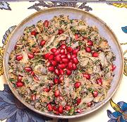

|
Cabbage SaladGeorgia - Kombosto Pkhali | ||||
| Makes: Effort: Sched: DoAhead: |
1 # *** 2-1/2 hrs Best |
Given the list of ingredients this unusual salad could only be Georgian. I'm classifying it as an appetizer, as it goes really well with bread or rolled up in Lavash. | |||
|
12 2 ------ 2 2-1/2 1 1/2 1/4 1/4 1/2 ------ 1/2 1/4 1/4 ------ 1 ------ |
oz T --- cl oz t t t t t --- c c c --- T --- |
Cabbage Oil -- Spicing Garlic Walnut meats Coriander Seeds Marigold Petals (1) Fenugreek leaf (2) Chili Powder (3) Salt -- Herbs Pomegranate Seeds Cilantro (4) Basil, opal ------------ Wine Vinegar -- Garnish Pomegranate Seeds |
Make - (2-1/2 hrs - 50 min work)
|